Examples#
This gallery walks through blockchainkit.structures, one experiment per
breakthrough on the structures history page: double-entry ledgers and account nonces,
Bloom filters, hash chains, Merkle trees and their pitfalls, linked and batched
timestamps, unspent outputs, light clients, transaction ids, replay protection,
sparse Merkle trees, and mountain ranges. The chain examples follow a payment
through blocks, forks and reorganizations.
Each script is self-contained and runs with
python examples/structures/<section>/<script>.py.
Bloom filters#
Compact, approximate set membership for light clients.
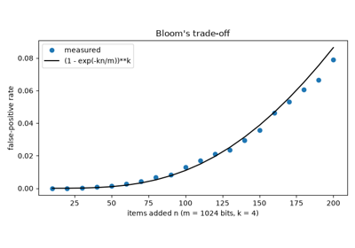
Bloom filters: membership with false positives (Bloom 1970)
Chains and payments#
Linked blocks, cumulative-work fork choice, reorganizations, and a payment from signature to confirmation.
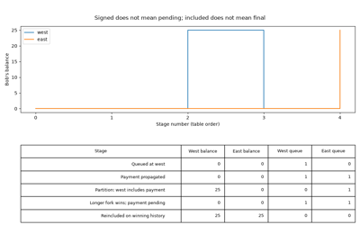
One payment from signature to reorganization and reinclusion
Hash chains#
Repeated hashing as a source of one-time secrets.
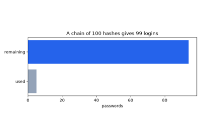
Hash chains and one-time passwords (Lamport 1981)
Ledgers#
Account balances: conservation of value and per-account sequence numbers.
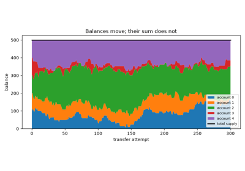
Double-entry bookkeeping: value is moved, never created (Pacioli 1494)
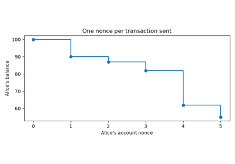
The account model and nonces (Ethereum 2014)
Merkle trees#
Inclusion proofs, ambiguity attacks, append-only logs, and mountain ranges.
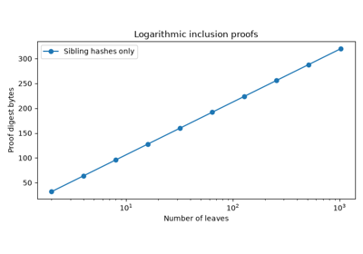
Merkle trees: authenticate one item with a short proof (Merkle 1979)
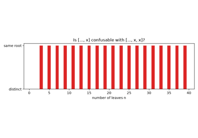
Two lists, one root: the duplicated-leaf ambiguity (CVE-2012-2459)
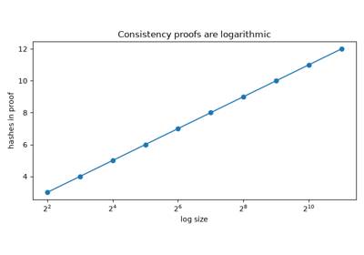
Append-only logs: consistency proofs (Certificate Transparency 2013)
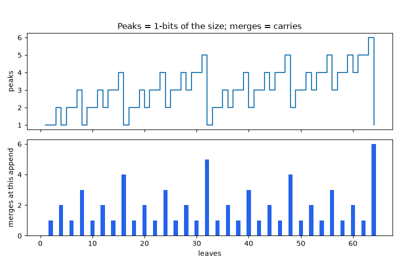
Merkle mountain ranges: an append-only accumulator (Todd 2016)
Light clients#
Verifying a payment with block headers only.
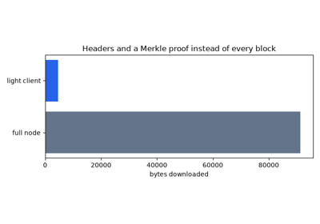
Simplified payment verification: light clients (Nakamoto 2008)
State commitments#
Committing to a whole key-value state with one root.
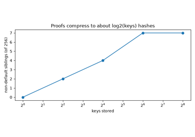
Sparse Merkle trees: proofs of absence (Dahlberg, Pulls and Peeters 2016)
Timestamping#
Proving that a document existed by a given time.
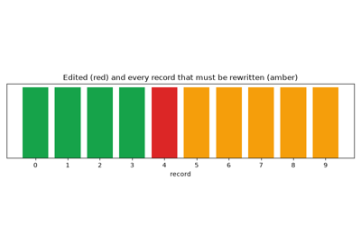
Linked timestamps: tamper evidence by hashing the past (Haber and Stornetta 1991)
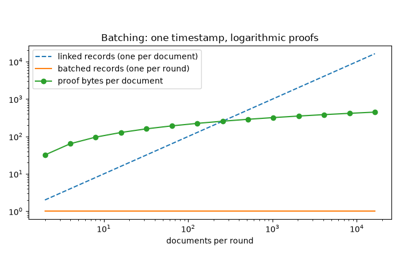
Batching timestamps with a Merkle tree (Bayer, Haber and Stornetta 1993)
Transaction identity#
What a transaction id covers, and which network a signature belongs to.
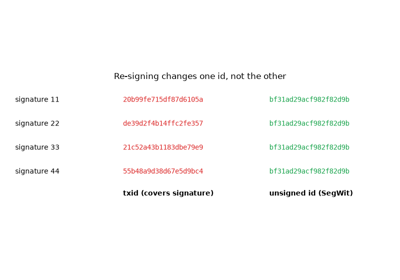
Transaction malleability and segregated witness (2014-2017)
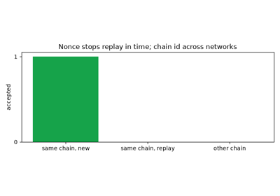
Replay protection with a chain identifier (EIP-155, 2016)
Unspent outputs#
Bitcoin’s coin-based ledger.
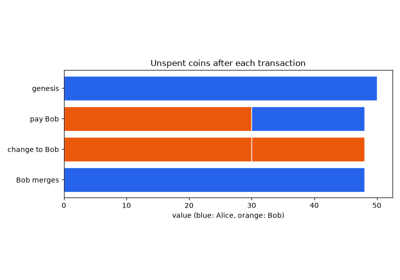
Coins, not accounts: the unspent-output model (Nakamoto 2008)